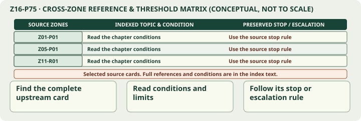

Z16-P75 · Field reference atlas · New manuscript
Offline Archive Verification, Checksums and Publication HOLD Governance
Document the GitHub-safe modular zone archive, deterministic checksums, reproducible complete-bundle builder, and final publication HOLD gate.
When it applies · Verifying downloaded offline review packages, print proofs, and repository integrity.
Equipment · Full offline reader (Z01–Z16), primary zone cards, and local emergency and agency references.

Actions
- Verify offline package integrity via PACKAGE-MANIFEST.json and the package SHA-256 manifest covering the core offline reader bundle (foundations-offline.zip) plus 16 checksum-verified per-zone packages (zone-Z01.zip through zone-Z16.zip), keeping every committed archive cleanly under GitHub size limits.[A10]
- Reproduce the complete single-file archive locally on demand via python3 check_foundations.py with the assemble-complete flag, and re-verify frozen custody, reproducible HTML generation, tagged Letter and A4 proofs, and all regression tests offline.[A10]
- Keep formal PDF, UA conformance validation, physical grayscale print contrast checks, assistive-device screen-reader trials (H14), and all human specialist approvals explicitly open under publication: HOLD.[A10]
Failure recognition · Distributing unchecksummed bundles or treating automated Chromium, PyMuPDF checks as formal PDF, UA or field-use approval violates project governance.[A10]
Verify · Every committed archive passes CRC and SHA-256 verification under the 45 MB ceiling, and reproducible builds match checked-in bytes.[A10]
Stop or change course · Stop distribution for public field use while publication: HOLD remains active across all 1,016 draft pages.[A10]
Evidence and editorial notes
- A10 · FEMA / Ready.gov · Make a Plan (current web edition)
- Section: Offline reader navigation, historical lineage, and HOLD transparency · Conditions: Using the complete 16-zone offline archive, zone readers, and print proofs
Support: Navigation aids expose draft status, reconstruction lineage, open diagnostic photo needs, and pending specialist holds on every lookup path.
Limitations: Automated validation checks structure and citations only; publication remains HOLD until qualified human review completes. · Conflicting evidence: None noted.
Editorial note: Anchors Z16 offline navigation & governance index. · Specialist reviewer: Accessibility, print QA, and editorial reviewer
Primary source · checked 2026-11-24
Source lineage · New manuscript (Z16 P20 archive governance) · Classification · New manuscript.